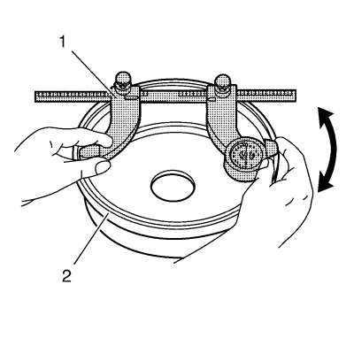

Advertencia: Consulte Advertencia relacionada con el polvo procedente de los frenos en la sección Prólogo.

- Desmonte el tambor de freno. Consultar Sustitución del tambor de freno
- Limpie la superficie de contacto del revestimiento de la zapata de freno del tambor de freno (2) con alcohol desnaturalizado o un limpiador de frenos aprobado equivalente.
- Utilizando un micrómetro (1) de tambor de freno calibrado en milésimas de pulgada, mida y registre el diámetro más grande del tambor de freno en cuatro o más puntos equidistantes del tambor.
Asegúrese de que sólo se toman medidas en el área de contacto del revestimiento de la zapata de freno. El micrómetro debe estar posicionado a la misma distancia desde el borde exterior del tambor para cada medida.
- Compare la medida del mayor diámetro registrado con las especificaciones de los componentes del tambor de freno. Consultar Especificaciones de componentes de frenos de tambor .
- Si la medida del mayor diámetro del tambor de freno es menos que la especificación del máximo diámetro interior permisible después del repasado, se puede repasar el tambor, dependiendo de la superficie y de las condiciones de desgaste.
- Si la medida del mayor diámetro del tambor de freno es igual o mayor que la especificación del máximo diámetro permisible después del repasado, no se puede repasar el tambor.
- Si la medida del mayor diámetro del tambor de freno es igual o mayor que la especificación del diámetro de descarte, se tiene que cambiar el tambor.
- Montar el tambor de freno. Consultar Sustitución del tambor de freno .